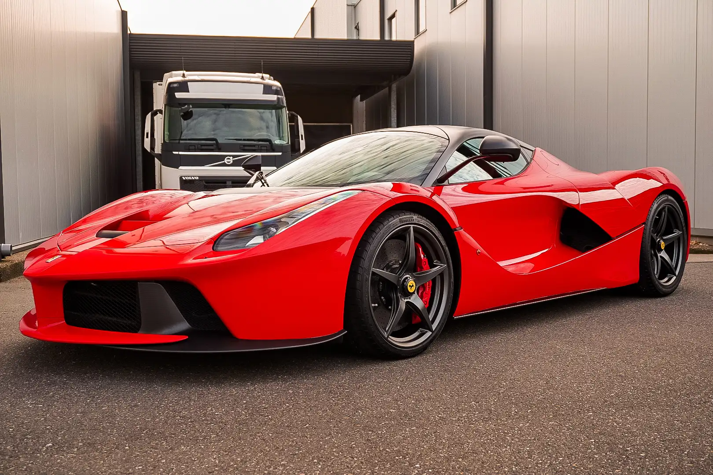

Ferrari LaFerrari
De Ferrari LaFerrari is het vlaggenschip van het Italiaanse automerk en werd in 2013 gelanceerd als onderdeel van een unieke groep hypercars, ook wel bekend als de "Holy Trinity". Deze term verwijst naar de drie meest opmerkelijke hypercars die in dezelfde tijdsperiode werden uitgebracht door de meest vooraanstaande fabrikanten van supersportauto's.
De LaFerrari is een meesterwerk van techniek en design. Onder de motorkap bevindt zich een krachtige 6,3-liter V12-motor die wordt ondersteund door een elektromotor, wat resulteert in een gecombineerd vermogen van meer dan 950 pk. Deze hybride aandrijflijn maakt gebruik van geavanceerde KERS (kinetic energy recovery system) technologie, afkomstig uit de Formule 1, om extra vermogen te genereren tijdens acceleratie.
Wat de LaFerrari onderscheidt, naast zijn adembenemende prestaties met een topsnelheid van ongeveer 350 km/u en een acceleratie van 0 naar 100 km/u in minder dan drie seconden, is het compromisloze streven naar prestaties en de integratie van geavanceerde technologieën. Het chassis is vervaardigd uit koolstofvezel voor maximale sterkte en lichtgewicht constructie, en het voertuig beschikt over actieve aerodynamica om de luchtstroom te optimaliseren en de stabiliteit bij hoge snelheden te verbeteren.
Wat de LaFerrari onderscheidt, naast zijn adembenemende prestaties met een topsnelheid van ongeveer 350 km/u en een acceleratie van 0 naar 100 km/u in minder dan drie seconden, is het compromisloze streven naar prestaties en de integratie van geavanceerde technologieën. Het chassis is vervaardigd uit koolstofvezel voor maximale sterkte en lichtgewicht constructie, en het voertuig beschikt over actieve aerodynamica om de luchtstroom te optimaliseren en de stabiliteit bij hoge snelheden te verbeteren.
In de context van de "Holy Trinity" wordt de LaFerrari vaak vergeleken met de McLaren P1 en de Porsche 918 Spyder. Deze drie hypercars vertegenwoordigen gezamenlijk de culminatie van technologische vooruitgang en prestatiegericht ontwerp in de autowereld. De McLaren P1, met zijn hybride aandrijflijn en aerodynamische innovaties, en de Porsche 918 Spyder, met zijn plug-in hybride configuratie en uitstekende veelzijdigheid, maken samen met de LaFerrari deel uit van een selecte groep voertuigen die de normen voor hypercarprestaties hebben herschreven. Samen vormen ze de "Holy Trinity", een iconische drie-eenheid die de grenzen van autotechniek en exclusiviteit heeft verlegd.